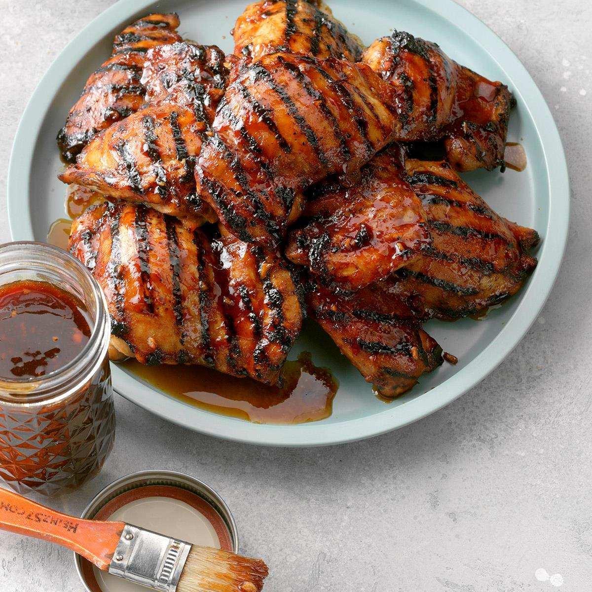

Huli Huli Chicken

Description
'Huli Huli Chicken' (turn, turn) was invented by Ernest Morgado when he cooked teriyaki chicken for a group of farmers in 1955. This has been a Hawaiian staple with sticky rice ever since. This is a version of Huli Huli Chicken. Use aji mirin (sweet rice wine) in place of sherry if desired.
Ingredients
- 2 chickens each cut into 9 pieces
- 1 cup unsweetened pineapple juice
- 0.5 cup soy sauce
- 0.5 cup brown sugar
- 3 cloves garlic, crushed
- 4 green onions, chopped
Steps
- Rinse chicken pieces and pat dry with paper towels. Combine pineapple juice, soy sauce,
brown sugar, ketchup, sherry, ginger, garlic, green onions, and dry mustard in a large resealable plastic bag, stirring the marinade until brown sugar has dissolved. Place chicken pieces into the bag, squeeze out air, seal bag, and lomi (massage) bag to coat chicken with marinade. Refrigerate at least 4 hours to overnight.
- Move an oven rack 6 inches from heat source and preheat oven to 425 degrees F (220 degrees C).
- Remove chicken from marinade and arrange chicken, skin sides up, on a broiler pan.
- Bake chicken in preeated oven until browned on both sides and the juices run clear, turning every 10 minutes, 30 to 45 minutes. Baste with remaining marinade after each turning. An instant-read meat thermometer inserted into the thickest piece of chicken, not touching bone, should read at least 160 degrees F (70 degrees C).